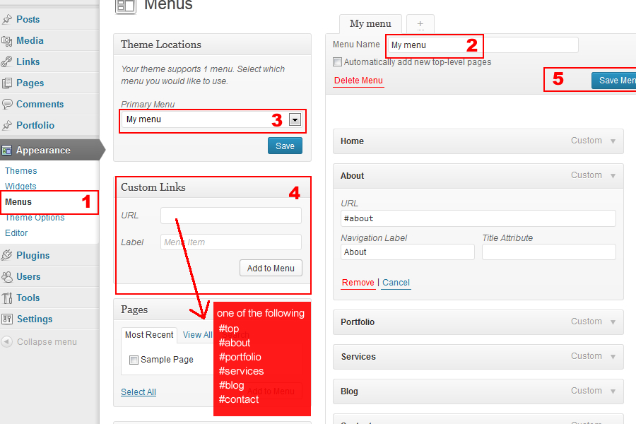
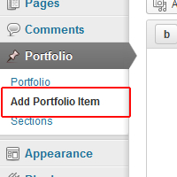
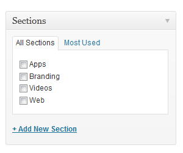
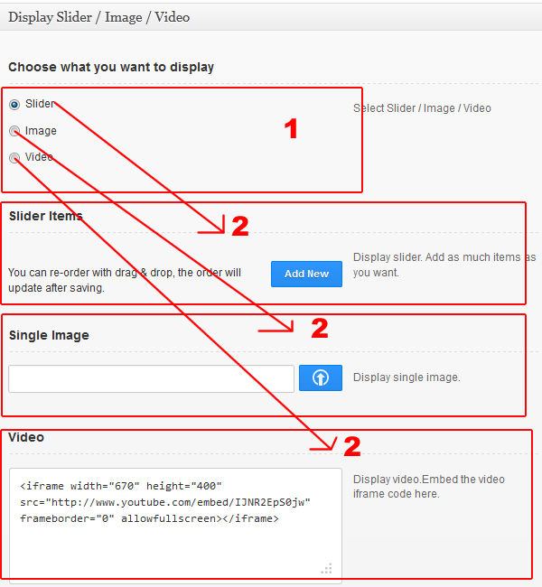

Atolo - Single Page Responsive Wordpress Theme - Documentation
by MatchThemes - www.matchthemes.com
Hi there,
First of all, thank you for purchasing Atolo - Single Page Responsive Wordpress Theme. Please take the time and read the instructions below. If you have any future question/problems send us an email at: support@matchthemes.com
Table of Contents
- 1. Getting Started
- 1.1 Install Wordpress
- 1.2 Navigation Menu Setup
- 1.3 Add Portfolio Items
- 1.4 Customize Theme Sections
- 1.5 Change Contact Form Email
- 1.6 Widgets
- 2. Files Used
- 2.1 CSS Files
- 2.2 Javascript Files
1. Getting Started
1.1 Install Wordpress
- 1. Via FTP: Upload atolo folder into wp-content/themes folder.
- 2. Via Wodpress Admin: Go to Appearance-> Install Themes -> Upload and choose atolo.zip file. Click Install Now.
After you installed the theme you can customize it in the Appearance -> Theme Options.
1.2 Navigation Menu Setup
1. Go to Appearance - > Menus tab.
2. Add new menu, enter Menu Name.
3. Select Menu.
4. Custom Link - create a link and make sure the URL field takes one of the following values: #top, #about, #portfolio, #services, #blog, #contact. These are the main sections ids.
5. Drag & drop the menu items as you like. Check the image below. Than save the menu.

If you want to rearange the sections, open and edit the index.php.
1.3 Add Portfolio Items
To create a Portfolio Item go to Portfolio and click Add Portfolio Item button.

a. Add Featured Image: go to "Featured Image" block (located in the right side) and click "Set Featured Image". Choose your image and then click "Set Featured Image" button.
IMPORTANT: for portfolio items make sure the Featured Image is at least 350x350px for a better view.
b. Create Portfolio Item categories via custom taxonomy named "Section". Just click "Add New Section" if a taxonomy term isn't created.

c. For each Portfolio Item you can choose to display its information in 3 different ways: single image, slider or video. For that go to MetaBox - Display Slider / Image / Video and select your option. After that complete the option you choose, below the radion buttons selection.(see image)

1.4 Customize Theme Sections
You can customize each section by going to Appearance -> Theme Options.
Here you can add slideshow items, customize each section background colors, text colors and much more.
IMPORTANT: Make sure when you create a blog post your featured image is at least 770x300px for a better view.
1.5 Change Contact Form Email
You have to edit the include/contact-process.php and change the $recipient variable value with your own email address.

1.6 Widgets
Recent Posts: A widget that displays the recent posts with images.
Video Widget: A widget that displays your YouTube or Vimeo Video.
Flickr Widget: A widget that displays your Flickr photos..
2. Files Used
2.1 CSS Files
All CSS files, with the exception of the main CSS file (style.css) can be found in the theme's /css/ folder.
style.css - Main stylesheet and determines the majority of the templates styling.
bootstrap.css & bootstrap-responsive.css - The styles for the Twitter Bootstrap framework.
2.2 Javascript Files
Portfolio Filter - jQuery Isotope.
FlexSlider - item porfolio slideshow.
jQuery PrettyPhoto - great image lightbox.